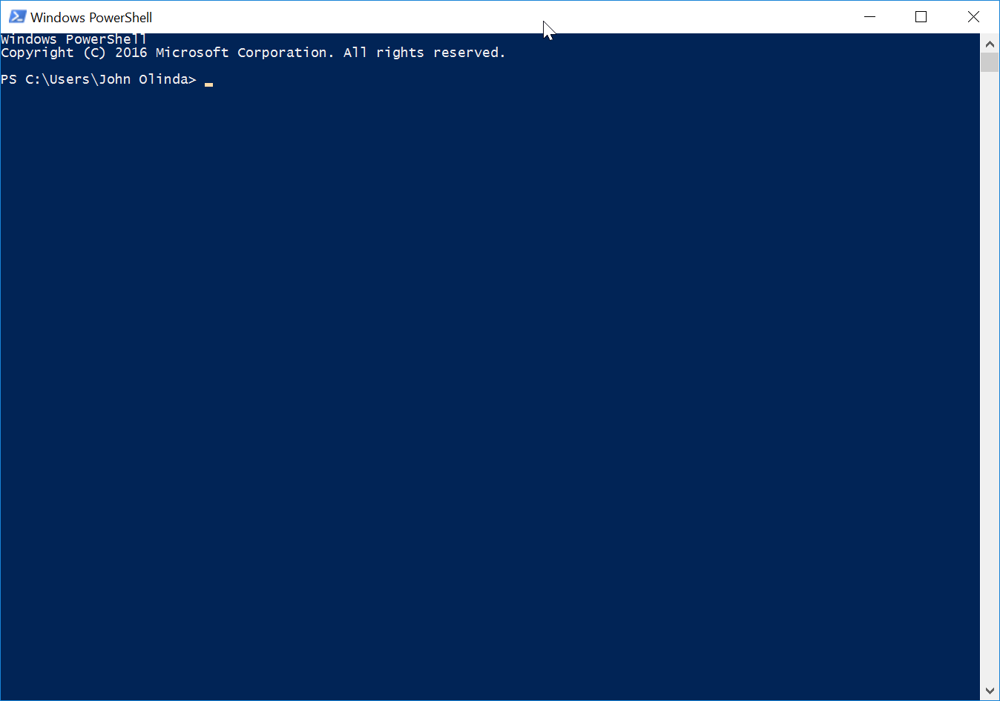

زیادہ تر وقت ہم کمپیوٹر اور دیگر الیکٹرانک آلات استعمال کر رہے ہیں، ہم نے ایک گرافیکل یوزر انٹرفیس، یا GUI کے طور پر جانا جاتا ہے کے استعمال کر رہے ہیں. ان انٹرفیس صارف کے درمیان ایک پرت پر ہیں - آپ - اور مشین. گرافیکل یوزر انٹرفیس عام ہونے سے پہلے، سب سے زیادہ مشینوں کو کمانڈ لائن استعمال کرتے ہوئے چلایا گیا. تمام تین بڑے آپریٹنگ سسٹمز - لینکس، ونڈوز، اور MacOS - ایک کمانڈ لائن ہے، آپ ان کا استعمال کرنے کی ضرورت نہیں ہے اگرچہ. ہم PowerShell اور ایک شاندار ہڑتال کا استعمال کرتے ہوئے کی مشق کرنے کے لئے جا رہے ہیں. اگر آپ ایک میک کا استعمال کرتے ہوئے کر رہے ہیں تو، آپ کو اس کام کو مکمل کرنے کے لئے ایک ونڈوز کمپیوٹر قرضے لینے کی ضرورت ہو گی. ہم ایک شاندار ہڑتال کی پریکٹس کے لئے ہماری PocketCHIPs استعمال کریں گے.
یہ ایک بہت طویل سبق ہے، تو یہ آپ کو یہ کرنا چاہئے لگتا ہے کے مقابلے میں زیادہ وقت لیتا ہے تو مایوس نہ ہو.
آپ ورزش کے اس حصے کے لئے ایک ونڈوز کمپیوٹر کا استعمال کرنا چاہئے، تاکہمہربانی کرکے مسٹر Olinda معلوم ہے کہ تم ایک اسکول قرضے لینے کی ضرورت ہے تو بتائیںکمپیوٹر. شروع مینیو کھولیں اور کے لئے تلاش WindowsPowerShell. یہ پہلا نتیجہ ہو، لیکن اس بات کو یقینی بنانا چاہئےآپ ISE میں ختم ہونے والے کسی کے اختیارات کا انتخاب نہیں کرتے. آپ کو دیکھنا چاہئےاس طرح لگ رہا ہے کہ ونڈو:

تمہاری بجائے اپنا صارف کا نام دکھانا چاہیئے "جان Olinda،"لیکن اس کے علاوہ یہ ایک جیسی ظاہر ہو جانی چاہئے. I کی طرف رجوع کر لیں گےاس سبق بھر میں اور کورس کے دوران "فوری".اور جی ٹی میں PowerShell کو فوری طور پر ختم ہو جاتا ہے؛ علامت اور اشارہ کرتا ہےکیا آپ کمانڈ ٹائپ کر سکتے ہیں کہ. کبھی کبھی میں صاف کرنے کے لئے آپ کو پوچھیں گےٹائپ کرکے اپنے ٹرمینلclear اور دبانےدرج. یہ کمانڈ لائن کے مواد کو ختم کرتا ہے لیکن یہپچھلے کمانڈز کو رد نہیں کریں گے.
یہ کمانڈ "پرنٹ کام کر ڈائریکٹری کے لئے ایک مختصر نام ہے.یہ حکم، تم کیا ڈائریکٹری (فولڈر) آپ میں ہیں کو ظاہر کرتا ہےتمہیں کھو رہے ہیں، تو جس مددگار ہو سکتا ہے. آپ کو کچھ بھی کرنے سے پہلےورنہ، صرف ٹائپ pwd فوری اور پریس میںدرج. یہ تین بار کیا.
آپ کے ہاتھ اٹھانے اور مسٹر Olinda اس کی تصدیق کی ہے چوکی.
یہ کمانڈ کے لئے ایک مختصر نام ہے "تبدیلی کی ڈائریکٹری." یہ آپ کو کمانڈ لائن میں ایک دوسرے سے ڈائریکٹری (فولڈر) سے منتقل کرنے کی اجازت دیتا ہے. یہ بھی ایک وقت میں ڈائریکٹریز کو ایک سطح کو تبدیل کرنے کے مقابلے میں بہت تیز ہو سکتا ہے جو آپ کے گھر ڈائریکٹری میں آپ کام کر ڈائرکٹری بحال کر سکتے ہیں.
قسم cd اور پریس درج کریں. کہ کچھ بھی نہیں تبدیل کر دیا گیا نوٹس. آپ صرف کمپیوٹر سے کہا، کیونکہ موجودہ ڈائریکٹری کو تبدیل کرنا اس لئے ہے.
قسم cd Downloads اور پریس درج کریں. آپ فوری طور پر اب ڈاؤن لوڈ کے فولڈر میں شامل ہیں تو دیکھنے کے لئے چیک کریں ذرا پہلے اور جی ٹی. علامت. اب، آپ کو پھانسی کسی بھی حکم دیتا ہے اس ڈائریکٹری (فولڈر) بجائے اپنے گھر کی ڈائریکٹری میں چلایا جائے گا.
قسم cd .. اور پریس درج کریں. اپنے موجودہ کام کر ڈائرکٹری کیا ہے دیکھنے کے لئے چیک کریں. یہ آپ کے گھر کی ڈائریکٹری ہونا چاہئے. کیا آپ کو یقین نہیں ہو، تو، صرف ٹائپ pwd اور
پریس کو چیک کرنے کے لئے درج. آپ کو ایک اور ڈائرکٹری نیچے چلا گیا ہے تو، آپ
ٹائپ کر سکتے ہیں cd ../.. ایک کمانڈ کے ساتھ دو بار واپس اوپر جانا. ہم اگلے چوکی میں اس کی مشق کریں گے.
قسم cd Mu اور ٹیب دبائیں. PowerShell کو لاپتہ خطوط اور شو میں بھرنے چاہئے cd .\Music\
بجائے. ابھی دبائیں درج کریں. آپ کو کمانڈ لائن استعمال کرتے ہوئے کر رہے ہیں تو، آپ کو کمانڈ، ڈائرکٹری، یا آپ کو پوری کمانڈ ٹائپ کرنے کی بجائے پر کام کر رہے ہیں اس فائل خود تکمیل کیلئے ٹیب دبائیں کر سکتے ہیں.
اگلا، قسم cd ~ اور یہ کہ آپ کی پیٹھ میں ہو محسوس
آپ کے گھر کی ڈائریکٹری.
آپ کے ہاتھ اٹھانے اور مسٹر Olinda اس کی تصدیق کی ہے چوکی.
یہ کمانڈ آپ کے کام کرنے کی ڈائریکٹری کے اندر ایک نئی ڈائریکٹری پیدا کرتا ہے. آپ کو آپ کے گھر کی ڈائریکٹری میں ہونا چاہئے. ، قسم نہیں تو
cd ~ اور وہاں جانے کے لئے درج کریں دبائیں. پھر ٹائپ mkdir
test اور پریس کو آپ کے گھر کی ڈائریکٹری کے اندر "ٹیسٹ" نامی ایک ڈائریکٹری بنانے کے لئے درج کریں. پھر ٹائپ cd test
اور پریس آپ کو صرف پیدا ڈائریکٹری میں نیچے جانے کے لئے درج کریں.
قسم mkdir anotherTest اور پریس "ٹیسٹ" ڈائرکٹری کے اندر ایک اور ڈائریکٹری تشکیل کرنے کے لئے درج. پھر ٹائپ cd anotherTest اور پریس اس نئی ڈائریکٹری میں نیچے جانے کے لئے درج کریں.
آپ کے ہاتھ اٹھانے اور مسٹر Olinda اس کی تصدیق کی ہے چوکی.
یہ کمانڈ موجودہ کام کر ڈائرکٹری کے اندر فائلوں اور ڈائریکٹریز کی فہرست. قسم cd ~ اور آپ کے گھر کی ڈائریکٹری میں واپس جانا دبائیں درج کریں. پھر ٹائپ ls
اور ڈائریکٹری اندر کیا دیکھنا دبائیں درج کریں.
آپ کے ہاتھ اٹھانے اور مسٹر Olinda اس کی تصدیق کی ہے چوکی.
یہ کمانڈ ڈائریکٹریز کو ہٹاتا ہے. قسم cd ~اور آپ کے گھر کی ڈائریکٹری کے لئے واپس کرنے دبائیں درج کریں. پریس ونڈوز-E اور آپ کے گھر کی ڈائریکٹری میں جانے کے تاکہ آپ تبدیلیاں آپ PowerShell میں بنانے ونڈوز ایکسپلورر میں عکاسی کو دیکھ سکتے ہیں. پھر "ٹیسٹ" ڈائریکٹری میں نیچے تشریف لے. قسم rmdir
anotherTest اور حذف کرنے دبائیں درج کریں
"anotherTest" ڈائریکٹری اور پھر استعمال ls یقین ہے کہ یہ خارج کر دیا گیا ہے بنانے کے لئے. آپ کے گھر کی ڈائریکٹری پر واپس جائیں اور "ٹیسٹ" ڈائریکٹری کو حذف. استعمال ls یقین ہے کہ آپ اس کو نکال دیا گیا ہے بنانے کے لئے. آپ کو ونڈوز ایکسپلورر میں آپ کے گھر کی ڈائریکٹری کو چیک کرتے ہیں تو آپ کو دیکھنا چاہئے کہ دونوں ڈائریکٹریز چلے گئے ہیں.
اب، قسم mkdir -p test/anotherTest (یا ونڈوز 8 پر, mkdir -Path test/anotherTest) اور پریس درج کریں. -p ہم ایک پرچم پر کال کریں اور یہ ہمیں تھوڑا سا مختلف کچھ کرنا کا حکم دیتا ہے پر نظر ثانی کرنے کی اجازت دیتا ہے. اس صورت میں، -p پرچم ہماری ایک ہی وقت میں، دو ڈائریکٹریوں، دوسرے کے اندر ایک تخلیق کرنے کی اجازت دیتا ہے. ابھی ٹائپ rmdir test اور کیا ہوتا ہے دیکھتے.
آپ کے ہاتھ اٹھانے اور مسٹر Olinda اس کی تصدیق کی ہے چوکی.
یہ دونوں حکم دیتا ہے آپ کو تیزی سے مختلف ڈائریکٹریز کے درمیان سوئچ کرنے کی اجازت دیتے ہیں. یہ ایک شاندار ہڑتال میں گا کے مقابلے میں PowerShell میں مختلف طریقے سے ایک چھوٹا سا کام کرتا ہے
سب سے پہلے، قسم mkdir -p test/anotherTest/yetAnotherTest
اور پریس درج کریں. پھر ٹائپ pushd
test/anotherTest/yetAnotherTest اور دیکھتے ہیں کیا. آپ کے ساتھ "yetAnotherTest" ڈائریکٹری میں ہیں کہ تصدیق کریں pwd.
پھر ٹائپ popd اور پریس درج کریں. اب آپ کہاں ہیں؟ کے ساتھ اس کی تصدیق کریں pwd.
استعمال ls اور pushd واپس منتقل کرنے کے. مختلف ڈائریکٹریز استعمال کرتے ہوئے اس میں کم از کم تین بار کوشش..
آپ کے ہاتھ اٹھانے اور مسٹر Olinda اس کی تصدیق کی ہے چوکی.
یہ کمانڈ آپ نئے فائلوں کو پیدا کرنے کی اجازت دیتا ہے. سب سے پہلے، کے استعمال cd
"yetAnotherTest" ڈائریکٹری میں منتقل کرنے کے. ایک بار جب آپ وہاں حاصل، قسم New-Item test.txt اور پریس درج کریں. آپ کے ساتھ ایک نئی فائل پیدا کرنے کی توثیق ls.
اس کے بعد کا استعمال کرتے ہوئے آپ کے گھر کی ڈائریکٹری کے لئے واپس جانا cd
اور قسم New-Item
test/anotherTest/yetAnotherTest/hello.txt اور پریس درج کریں. اس کے بعد آپ کو ٹائپ کرکے ایک نئی فائل پیدا کی تصدیق ls
test/anotherTest/yetAnotherTest/ اور دبانے درج کریں. تم صرف اصل میں وہاں منتقل کرنے کے بغیر آپ کے موجودہ کام کر ڈائرکٹری ذیل میں ایک ڈائریکٹری میں ایک فائل پیدا. اس کے بعد آپ آگے بڑھ رہے ہیں بغیر اس ڈائریکٹری کے مواد کی فہرست میں شامل.
آپ کے ہاتھ اٹھانے اور مسٹر Olinda اس کی تصدیق کی ہے چوکی.
یہ کمانڈ آپ کو ایک ہی ڈائریکٹری کے اندر اندر کے طور پر بھی ایک جگہ سے فائلوں اور ڈائریکٹریز کو کاپی کرنے کی اجازت دیتا ہے. فائلیں بالکل کاپی یا کاپی جب نام تبدیل کر دیا جا سکتا ہے.
"yetAnotherTest" ڈائریکٹری میں منتقل کریں. قسم cp
hello.txt howdy.txt اور پریس درج کریں. اس کے بعد استعمال کریں ls
آپ کو اب تین فائلوں ہے تو دیکھنے کے لئے - test.txt, hello.txt, اور
howdy.txt - ڈائریکٹری میں. تم بس فائل کو کاپی کیا اور ایک ہی وقت میں اس کے نام تبدیل کر دیا.
قسم mkdir pleaseStop اور پریس درج کریں. پھر ٹائپ cp hello.txt pleaseStop/ اور پریس درج کریں. اب جب آپ استعمال کرتے ہیں ls آپ "yetAnotherTest" کے اندر ایک نئی ڈائریکٹری کو دیکھنا چاہئے.
قسم cp -r pleaseStop really (یا ونڈوز 8 پر، قسم cp -Recurse pleaseStop really) اور پریس درج کریں. اس کے بعد استعمال کریں ls آپ "واقعی" ڈائریکٹری دیکھ سکتے ہیں کہ بات کو یقینی بنانا. تم نے صرف ایک ڈائریکٹری اور ایک نئی ڈائریکٹری میں اس کے مندرجات کو کاپی کیا. -r پرچم "recurse" ڈائریکٹری اور اس کا تمام مواد اثر انداز ہوتا ہے، جس کے لئے کھڑا ہے.
آپ کے ہاتھ اٹھانے اور مسٹر Olinda اس کی تصدیق کی ہے چوکی.
یہ حکم کی طرح ہے cp کہ بجائے فائل کو کاپی کرنے کے سوا، یہ ایک نئی جگہ پر فائل چلتا. تاہم، صرف پسند cp, mv
بھی ایک ہی وقت میں فائلوں کا نام تبدیل کر سکتے ہیں. سچ تو یہ ہے، زیادہ تر وقت آپ اس حکم کو فائلوں کا نام تبدیل کرنے کے لئے استعمال کریں گے، اصل میں ایک نئی جگہ پر ان کو منتقل نہیں.
یقینی بنائیں کہ آپ "yetAnotherTest" ڈائریکٹری اور قسم میں ہیں اس بات کا یقین
mv test.txt whenWillThisEnd.txt اور پریس درج کریں. اس کے بعد استعمال کریں ls کہ test.txt ابھی whenWillThisEnd.txt بجائے کہا جاتا ہے کی تصدیق کے لئے.
ابھی ٹائپ mv really yesReally اور پریس درج کریں. آپ استعمال کر سکتے ہیں ls اس بات کا یقین کرنے کے لئے آپ کا نام دے دیا گیا ہوں
ڈائرکٹری صحیح.
ابھی کا استعمال mv ان کے اصل ناموں پر واپس whenWillThisEnd.txt اور "yesReally" کا نام تبدیل کرنے.
آپ کے ہاتھ اٹھانے اور مسٹر Olinda اس کی تصدیق کی ہے چوکی.
یہ حکم ایک ٹیکسٹ فائل کے مواد، خاص طور پر فائلوں کو آپ کے ٹرمنل ونڈو میں فٹ کرنے میں کافی وقت ہیں کہ ظاہر کرنے کے لئے استعمال کیا جاتا ہے.
لوڈ loremIpsum.txt اور آپ کے ڈاؤن لوڈ کے فولڈر میں اس کو بچانے. اس کے بعد استعمال کریں cp "yetAnotherTest" ڈائریکٹری میں ایک کاپی بنانے کے لئے.
پھر ٹائپ more loremIpsum.txt اور محسوس ہے کہ پوری فائل آپ کے ٹرمنل ونڈو میں ظاہر کیا جاتا ہے. فائل کافی لمبی تھی تو کیا آپ پوری فائل کو دیکھا تھا جب تک اگلے حصے کو ظاہر کرنے کی جگہ بار استعمال کر سکتے. یہ پیجنگ کہا جاتا ہے.
آپ کے ہاتھ اٹھانے اور مسٹر Olinda اس کی تصدیق کی ہے چوکی.
آخری حکم کے برعکس، یہ ایک کسی بھی پیجنگ کے بغیر آپ کے ٹرمینل پر فائل اسٹریمز. لیکن تم نے بھی آپ کے ٹرمینل پر ایک سے زیادہ فائلوں سٹریم کر سکتے ہیں. پہلا ونڈوز ایکسپلورر میں، اوپن "yetAnotherTest" اور آپ کے ٹیکسٹ ایڈیٹر کا استعمال کرتے ہوئے loremIpsum.txt سوا ہر ایک ٹیکسٹ فائل میں کچھ متن کا اضافہ. ہر فائل محفوظ کریں اور پھر اس پر منتقل..
قسم cat loremIpsum.txt اور پریس درج کریں.
قسم cat loremIpsum.txt hello.txt test.txt اور پریس درج کریں. اور پریس درج کریں cat
اور پھر درج کریں دبانے اور انفرادی طور پر فائلوں میں داخل ہونے. اس کے بعد ایک مختلف ترتیب میں متن فائلوں کے ساتھ کمانڈ کوشش.
آپ ایک ہی کمانڈ میں ایک بار سے زیادہ ایک ہی فائل سٹریم کر سکتے ہیں؟ پیداوار میں آپ کے ٹرمنل ونڈو کے لئے بہت طویل ہے تو کیا ہوتا ہے?
آپ کے ہاتھ اٹھانے اور مسٹر Olinda اس کی تصدیق کی ہے چوکی.
اب ہم استعمال کرتے ہوئے اس سبق سے ہماری فائلوں اور ڈائریکٹریز کو صاف کرنے جا رہے ہیں rm اور rmdir
حکم دیتا ہے.
آپ "yetAnotherTest" ڈائریکٹری میں ہیں بات کو یقینی بنائیں. پھر ٹائپ
rm loremIpsum.txt اور پریس درج کریں. استعمال ls
فائل کو چلا گیا ہے تو دیکھنے کے لئے. پھر ڈائریکٹری میں تمام دوسری فائلوں کو حذف کرنا rm استعمال کریں.
ابھی استعمال کرنے کی کوشش rmdir "pleaseStop" اور "واقعی" ڈائریکٹریز کو حذف کرنا. کام کرتا ہے؟ بیش میں آپ کو کوئی غلطی ملے گا، لیکن PowerShell میں آپ کو کہ خالی نہیں ہیں ڈائریکٹریز کے ساتھ کیا کرنا ہے فیصلہ کرنے کے قابل ہیں.
ابھی کا استعمال cd آپ کے گھر کی ڈائریکٹری میں جانے کے لئے. پھر ٹائپ rm -r test (استعمال کرنے کے لئے یاد -Recurse
بجائے -r اس کے مندرجات سمیت پورے ڈائرکٹری حذف کرنا، ترتیب میں ونڈوز 8) میں.
دونوں حکم دیتا ڈائریکٹریز اور فائلوں کو خارج کر سکتے ہیں، لیکن آپ کون سا کام کر ڈائریکٹری میں فائلوں کو خارج کرنے کے لئے استعمال کرتے ہیں؟ آپ ہمیشہ استعمال کرنا چاہئے rm and rmdir
بہت احتیاط کے بعد سے یہ اتفاقی طور پر فائلوں کو خارج کرنے کی طرف سے آپ کے سسٹم کو نقصان کرنے کے لئے آسان ہے.
آپ کے ہاتھ اٹھانے اور مسٹر Olinda اس کی تصدیق کی ہے چوکی.
یہ کمانڈ آپ کو ٹرمینل کو بند کرنے کی اجازت دیتا ہے. قسم exit
اور ٹرمینل کو بند کرنے کی دبائیں درج کریں.
آپ کے ہاتھ اٹھانے اور مسٹر Olinda اس کی تصدیق کی ہے چوکی.
تم، ورزش کے اس حصے کے لئے ایک PocketCHIP استعمال کرنا چاہیے تمہارے لئے اتنا پوچھنا براہ مہربانی. ٹرمینل کھولیں. آپ کا کہنا ہے کہ ایک سیاہ سکرین دیکھنا چاہئے chip@chip:~$ aND ایک ٹمٹمانے کرسر ہے. میں نے اس سبق بھر میں اور کورس کے دوران "فوری" کی طرف رجوع کر لیں گے. شاندار ہڑتال فوری طور پر $ علامت میں ختم ہو جاتی ہے اور بتاتی ہے کہ آپ کا حکم دیتا ہے ٹائپ کر سکتے ہیں کہ. کبھی کبھی میں ٹائپ کرکے اپنے ٹرمینل کو صاف کرنے کے لئے آپ کو پوچھیں گے clear اور دبانے درج کریں. یہ کمانڈ لائن کے مواد کو مٹا دے گا، لیکن یہ پچھلے حکم دیتا ہے کو رد نہیں کریں گے.
یہ کمانڈ "پرنٹ کام کر ڈائرکٹری کا مخفف. یہ حکم کیا ڈائریکٹری آپ کو کھو رہے ہیں، تو مددگار ثابت ہو سکتا ہے جس میں (فولڈر) آپ میں ہیں، میں آپ کو کچھ اور کرنے سے پہلے، صرف ٹائپ آپ کو ظاہر کرتا ہے pwd فوری اور پریس میں درج کریں. یہ تین بار کیا.
آپ کے ہاتھ اٹھانے اور مسٹر Olinda اس کی تصدیق کی ہے چوکی.
یہ کمانڈ کے لئے ایک مختصر نام ہے "تبدیلی کی ڈائریکٹری." یہ آپ کو کمانڈ لائن میں ایک دوسرے سے ڈائریکٹری (فولڈر) سے منتقل کرنے کی اجازت دیتا ہے. یہ بھی ایک وقت میں ڈائریکٹریز کو ایک سطح کو تبدیل کرنے کے مقابلے میں بہت تیز ہو سکتا ہے جو آپ کے گھر ڈائریکٹری میں آپ کام کر ڈائرکٹری بحال کر سکتے ہیں.
قسم cd اور پریس درج کریں. کہ کچھ بھی نہیں تبدیل کر دیا گیا نوٹس. آپ صرف کمپیوٹر سے کہا، کیونکہ موجودہ ڈائریکٹری کو تبدیل کرنا اس لئے ہے.
قسم cd Downloads اور پریس درج کریں. آپ فوری طور پر اب صرف $ علامت سے پہلے ڈاؤن لوڈ فولڈر میں شامل ہیں تو دیکھنے کے لئے چیک کریں. اب، آپ کو پھانسی کسی بھی حکم دیتا ہے اس ڈائریکٹری (فولڈر) بجائے اپنے گھر کی ڈائریکٹری میں چلایا جائے گا.
قسم cd .. اور پریس درج کریں. اپنے موجودہ کام کر ڈائرکٹری کیا ہے دیکھنے کے لئے چیک کریں. یہ آپ کے گھر کی ڈائریکٹری ہونا چاہئے. کیا آپ کو یقین نہیں ہو، تو، صرف ٹائپ pwd اور پریس کی جانچ کرنے کے لئے درج. آپ کو ایک اور ڈائرکٹری نیچے چلا گیا ہے تو، آپ ٹائپ کر سکتے ہیں cd
../.. ایک کمانڈ کے ساتھ دو بار واپس اوپر جانا. ہم اگلے میں اس کی مشق کریں گے چوکی.
قسم cd Mu اور ٹیب دبائیں. بیش لاپتہ خطوط اور شو میں بھرنے چاہئے cd Music/ بجائے. ابھی دبائیں درج کریں. آپ کو کمانڈ لائن استعمال کرتے ہوئے کر رہے ہیں تو، آپ کو کمانڈ، ڈائرکٹری، یا آپ کو پوری ٹائپ کرنے کے بجائے پر کام کر رہے ہیں اس فائل خود تکمیل کیلئے ٹیب دبائیں کر سکتے ہیں
اگلا، قسم cd ~ اور یہ کہ آپ کو آپ کے گھر کی ڈائریکٹری میں واپس آ گئے محسوس.
آپ کے ہاتھ اٹھانے اور مسٹر Olinda اس کی تصدیق کی ہے چوکی.
یہ کمانڈ آپ کے کام کرنے کی ڈائریکٹری کے اندر ایک نئی ڈائریکٹری پیدا کرتا ہے. آپ کو آپ کے گھر کی ڈائریکٹری میں ہونا چاہئے. ، قسم نہیں تو cd
~ اور وہاں جانے کے لئے درج کریں دبائیں. پھر ٹائپ mkdir
test اور پریس "ٹیسٹ" ڈائرکٹری کے اندر ایک اور ڈائریکٹری تشکیل کرنے کے لئے درج. پھر ٹائپ cd test اور نیچے آپ کو صرف پیدا ڈائریکٹری میں جانے کے لئے درج کریں دبائیں..
قسم mkdir anotherTest اور پریس "ٹیسٹ" ڈائرکٹری کے اندر ایک اور ڈائریکٹری تشکیل کرنے کے لئے درج. پھر ٹائپ cd
anotherTest اور پریس اس نئی ڈائریکٹری میں نیچے جانے کے لئے درج کریں.
آپ کے ہاتھ اٹھانے اور مسٹر Olinda اس کی تصدیق کی ہے چوکی.
یہ کمانڈ موجودہ کام کر ڈائرکٹری کے اندر فائلوں اور ڈائریکٹریز کی فہرست. قسم cd ~ اور آپ کے گھر کی ڈائریکٹری میں واپس جانا دبائیں درج کریں. پھر ٹائپ ls اور ڈائریکٹری کے اندر کیا ہے دیکھنے کے لئے درج کریں دبائیں.
آپ کے ہاتھ اٹھانے اور مسٹر Olinda اس کی تصدیق کی ہے چوکی.
یہ کمانڈ ڈائریکٹریز کو ہٹاتا ہے. قسمcd ~ اور آپ کے گھر کی ڈائریکٹری کے لئے واپس کرنے دبائیں درج کریں. پھر "ٹیسٹ" ڈائریکٹری میں نیچے تشریف لے. قسم rmdir anotherTest اور پریس "anotherTest" ڈائریکٹری کو حذف کرنے کے لئے درج کریں اور پھر استعمال کرتے ہیں ls
یقین ہے کہ یہ خارج کر دیا گیا ہے بنانے کے لئے. آپ کے گھر کی ڈائریکٹری پر واپس جائیں اور "ٹیسٹ" ڈائریکٹری کو حذف. استعمال ls یقین ہے کہ آپ اس کو نکال دیا گیا ہے بنانے کے لئے. آپ فائل براؤزر میں اپنے گھر کی ڈائریکٹری کو چیک کرتے ہیں تو آپ کو دیکھنا چاہئے کہ دونوں ڈائریکٹریز چلے گئے ہیں.
اب، قسم mkdir -p test/anotherTest اور پریس درج کریں. -p ہم ایک پرچم پر کال کریں اور یہ ہمیں تھوڑا سا مختلف کچھ کرنا کا حکم دیتا ہے پر نظر ثانی کرنے کی اجازت دیتا ہے. اس صورت میں، -p پرچم ہماری ایک ہی وقت میں، دو ڈائریکٹریوں، دوسرے کے اندر ایک تخلیق کرنے کی اجازت دیتا ہے. ابھی ٹائپ rmdir
test اور کیا ہوتا ہے دیکھتے.
آپ کے ہاتھ اٹھانے اور مسٹر Olinda اس کی تصدیق کی ہے چوکی.
یہ دونوں حکم دیتا ہے آپ کو تیزی سے مختلف ڈائریکٹریز کے درمیان سوئچ کرنے کی اجازت دیتے ہیں. PowerShell کے مقابلے میں ایک شاندار ہڑتال میں تھوڑا مختلف طریقے سے کام کرتا ہے.
سب سے پہلے، قسم mkdir -p test/anotherTest/yetAnotherTest
اور پریس درج کریں. پھر ٹائپ pushd
test/anotherTest/yetAnotherTest اور دیکھتے ہیں کیا. آپ کے ساتھ "yetAnotherTest" ڈائریکٹری میں ہیں کہ تصدیق کریں pwd.
پھر ٹائپ popd اور پریس درج کریں. اب آپ کہاں ہیں؟ کے ساتھ اس کی تصدیق کریں pwd.
استعمال کرنا ls اور pushd ایک اور ڈائریکٹری میں منتقل کریں اور پھر استعمال کرنے کے لئے popd واپس منتقل کرنے کے. مختلف ڈائریکٹریز استعمال کرتے ہوئے اس میں کم از کم تین بار کوشش.
اب، قسم cd ~ اور پریس درج کریں. پھر ٹائپ pushd
test/anotherTest/yetAnotherTest اور پریس درج کریں. "ٹیسٹ" کے علاوہ کسی دوسرے کی ڈائرکٹری پر تشریف لے جائیں اور پھر ٹائپ کریں pushd
اور پریس درج کریں.
آپ خود کی طرف سے سب ایک کمانڈ چلاتے ہیں، آپ کو کسی بھی دلائل کے بغیر اسے چلا رہے ہیں. آپ بھاگ گیا جب کیا ہوا pushd
کوئی بحث کے بغیر?
آپ کے ہاتھ اٹھانے اور مسٹر Olinda اس کی تصدیق کی ہے چوکی.
یہ کمانڈ آپ نئے فائلوں کو پیدا کرنے کی اجازت دیتا ہے. سب سے پہلے، کے استعمالx cd
"yetAnotherTest" ڈائریکٹری میں منتقل کرنے کے. ایک بار جب آپ وہاں حاصل، قسم touch test.txt اور پریس درج کریں. آپ کے ساتھ ایک نئی فائل پیدا کرنے کی توثیق ls.
اس کے بعد کا استعمال کرتے ہوئے آپ کے گھر کی ڈائریکٹری کے لئے واپس جانا cd اور قسم touch test/anotherTest/yetAnotherTest/hello.txt
اور پریس درج کریں. اس کے بعد آپ کو ٹائپ کرکے ایک نئی فائل پیدا کی تصدیق ls
test/anotherTest/yetAnotherTest/ اور دبانے درج کریں. تم صرف اصل میں وہاں منتقل کرنے کے بغیر آپ کے موجودہ کام کر ڈائرکٹری ذیل میں ایک ڈائریکٹری میں ایک فائل پیدا. اس کے بعد آپ آگے بڑھ رہے ہیں بغیر اس ڈائریکٹری کے مواد کی فہرست میں شامل.
آپ کے ہاتھ اٹھانے اور مسٹر Olinda اس کی تصدیق کی ہے چوکی.
یہ کمانڈ آپ کو ایک ہی ڈائریکٹری کے اندر اندر کے طور پر بھی ایک جگہ سے فائلوں اور ڈائریکٹریز کو کاپی کرنے کی اجازت دیتا ہے. فائلیں بالکل کاپی یا کاپی جب نام تبدیل کر دیا جا سکتا ہے.
"yetAnotherTest" ڈائریکٹری میں منتقل کریں. قسم cp hello.txt
howdy.txt اور پریس درج کریں. اس کے بعد استعمال کریں ls آپ کو اب تین فائلوں ہے تو دیکھنے کے لئے - test.txt, hello.txt, اور
howdy.txt - ڈائریکٹری میں. تم بس فائل کو کاپی کیا اور ایک ہی وقت میں اس کے نام تبدیل کر دیا.
قسم mkdir pleaseStop اور پریس درج کریں. پھر ٹائپ cp
hello.txt pleaseStop/ اور پریس درج کریں. اب جب آپ استعمال کرتے ہیں ls
آپ "yetAnotherTest" کے اندر ایک نئی ڈائریکٹری کو دیکھنا چاہئے.
قسم cp -r pleaseStop really اور پریس درج کریں. اس کے بعد استعمال کریں ls سینٹ ایک ڈائریکٹری اور ایک نئی ڈائریکٹری میں اس کے مندرجات کو کاپی کیا. -r پرچم "recurse" ڈائریکٹری اور اس کا تمام مواد اثر انداز ہوتا ہے، جس کے لئے کھڑا ہے.
آپ کے ہاتھ اٹھانے اور مسٹر Olinda اس کی تصدیق کی ہے چوکی.
یہ حکم کی طرح ہے cp کہ بجائے فائل کو کاپی کرنے کے سوا، یہ ایک نئی جگہ پر فائل چلتا. تاہم، صرف پسند cp, mv بھی ایک ہی وقت میں فائلوں کا نام تبدیل کر سکتے ہیں. سچ تو یہ ہے، زیادہ تر وقت آپ اس حکم کو فائلوں کا نام تبدیل کرنے کے لئے استعمال کریں گے، اصل میں ایک نئی جگہ پر ان کو منتقل نہیں.
یقینی بنائیں کہ آپ "yetAnotherTest" ڈائریکٹری اور قسم میں ہیں اس بات کا یقین mv
test.txt whenWillThisEnd.txtاور پریس درج کریں. اس کے بعد استعمال کریں ls
کہ test.txt تصدیق کے لئے اب whenWillThisEnd.txt بجائے کہا جاتا ہے.
ابھی ٹائپ mv really yesReally اور پریس درج کریں. آپ استعمال کر سکتے ہیں ls یقین ہے کہ آپ کو صحیح طریقے سے ڈائرکٹری نام تبدیل کر دیا ہے بنانے کے لئے.
ابھی کا استعمال mv whenWillThisEnd.txt اور "yesReally" ان کے اصل ناموں پر جایئے نام تبدیل کرنے کی.
آپ کے ہاتھ اٹھانے اور مسٹر Olinda اس کی تصدیق کی ہے چوکی.
یہ حکم ایک ٹیکسٹ فائل کے مواد، خاص طور پر فائلوں کو آپ کے ٹرمنل ونڈو میں فٹ کرنے میں کافی وقت ہیں کہ ظاہر کرنے کے لئے استعمال کیا جاتا ہے.
"yetAnotherTest" ڈائریکٹری میں منتقل ہونے کا سی ڈی استعمال. پھر ٹائپ curl
-O اور URL کے (لنک)
loremIpsum.txt file کام کر ڈائریکٹری کا فائل ڈاؤن لوڈ کرنے.
Then type less loremIpsum.txt اور یہ کہ پوری فائل آپ کے ٹرمنل ونڈو میں ظاہر کرنے کی بہت بڑی ہے محسوس کریں. آپ کو پوری فائل کو دیکھا ہے جب تک اگلے حصے کو ظاہر کرنے کے لئے اسپیس بار کا استعمال کریں. یہ پیجنگ کہا جاتا ہے.
آپ کے ہاتھ اٹھانے اور مسٹر Olinda اس کی تصدیق کی ہے چوکی.
آخری حکم کے برعکس، یہ ایک کسی بھی پیجنگ کے بغیر آپ کے ٹرمینل پر فائل اسٹریمز. لیکن تم نے بھی آپ کے ٹرمینل پر ایک سے زیادہ فائلوں سٹریم کر سکتے ہیں. سب سے پہلے، براؤز فائلوں درخواست میں ہوم بٹن اور کھلے "yetAnotherTest" دبائیں اور آپ کے ٹیکسٹ ایڈیٹر کا استعمال کرتے ہوئے loremIpsum.txt سوا ہر ایک ٹیکسٹ فائل میں کچھ متن کا اضافہ. ہر فائل محفوظ کریں اور پھر اس پر منتقل.
قسم cat loremIpsum.txt اور پریس درج کریں.
قسم cat loremIpsum.txt hello.txt test.txt اور پریس درج کریں. اس کے بعد ایک مختلف ترتیب میں متن فائلوں کے ساتھ کمانڈ کوشش.
آپ ایک ہی کمانڈ میں ایک بار سے زیادہ ایک ہی فائل سٹریم کر سکتے ہیں؟ کیا پیداوار میں آپ کے ٹرمنل ونڈو کے لئے بہت طویل ہے تو کیا ہوتا ہے؟
آپ کے ہاتھ اٹھانے اور مسٹر Olinda اس کی تصدیق کی ہے چوکی.
اب ہم اس سے ہمارے فائلوں اور ڈائریکٹریز کو صاف کرنے جا رہے ہیں
سبق کا استعمال کرتے ہوئے rm اور rmdir
حکم دیتا ہے.
آپ "yetAnotherTest" ڈائریکٹری میں ہیں بات کو یقینی بنائیں. پھر ٹائپ rm
loremIpsum.txt اور پریس درج کریں. استعمال ls فائل کو چلا گیا ہے تو دیکھنے کے لئے. پھر ڈائریکٹری میں تمام دوسری فائلوں کو حذف کرنا rm استعمال کریں.
ابھی استعمال کرنے کی کوشش rmdir "pleaseStop" اور "واقعی" ڈائریکٹریز کو حذف کرنا. کیا یہ کام کرتا ہے؟ بیش میں آپ کو کوئی غلطی ملے گا، لیکن PowerShell میں آپ ڈائریکٹریز کہ خالی نہیں ہیں کے ساتھ کیا کیا فیصلہ کرنے کے قابل ہیں.
ابھی کا استعمال cd آپ کے گھر کی ڈائریکٹری میں جانے کے لئے. پھر ٹائپ
rm -rf test اس کے مندرجات سمیت پورے ڈائرکٹری حذف کرنا، ترتیب میں. -f پرچم "فورس" اس کے اندر چیزیں ہیں یہاں تک کہ اگر ڈائرکٹری خارج کرتا ہے جس کا مطلب.
دونوں حکم دیتا ڈائریکٹریز اور فائلوں کو خارج کر سکتے ہیں، لیکن آپ کون سا کام کر ڈائریکٹری میں فائلوں کو خارج کرنے کے لئے استعمال کرتے ہیں؟ آپ ہمیشہ استعمال کرنا چاہئے rm اور rmdir بہت احتیاط کے بعد سے یہ اتفاقی طور پر فائلوں کو خارج کرنے کی طرف سے آپ کے سسٹم کو نقصان کرنے کے لئے آسان ہے.
آپ کے ہاتھ اٹھانے اور مسٹر Olinda اس کی تصدیق کی ہے چوکی.
یہ کمانڈ آپ کو ٹرمینل کو بند کرنے کی اجازت دیتا ہے. قسم exit
اور ٹرمینل کو بند کرنے کی دبائیں درج کریں.
آپ کے ہاتھ اٹھانے اور مسٹر Olinda اس کی تصدیق کی ہے چوکی.
یہ مکمل طور پر دستخط کئے ہے ایک بار آپ کی چوکی اسائنمنٹ ٹوکری میں شیٹ میں بند کر دیں. اب آپ کو بڑھاتے منصوبوں پر کام کر سکتے ہیں.